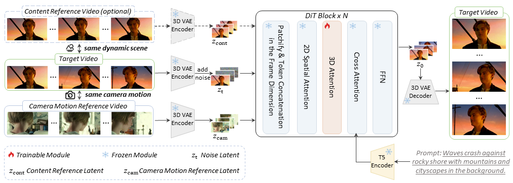

Camera control is crucial for generating expressive and cinematic videos. Existing methods rely on explicit sequences of camera parameters as control conditions, which can be cumbersome for users to construct, particularly for intricate camera movements. To provide a more intuitive camera control method, we propose CamCloneMaster, a framework that enables users to replicate camera movements from reference videos without requiring camera parameters or test-time fine-tuning. CamCloneMaster seamlessly supports reference-based camera control for both Image-to-Video and Video-to-Video tasks within a unified framework. Furthermore, we present the Camera Clone Dataset, a large-scale synthetic dataset designed for camera clone learning, encompassing diverse scenes, subjects, and camera movements. Extensive experiments and user studies demonstrate that CamCloneMaster outperforms existing methods in terms of both camera controllability and visual quality.
Given a camera motion reference video and an optional content reference video as inputs, 3D VAE encoder is utilized to convert reference videos into conditional latents $z_\textrm{cam}$ and $z_\textrm{cont}$. We inject the conditional latents into the model by concatenating them with the noise latent along the frame dimension. And only 3D spatial-temporal attention layers in DiT Blocks are trainable modules in the training process.
Reference-based camera clone learning requires triple video sets: a camera motion reference video $V_\textrm{cam}$, a content reference video $V_{\textrm{cont}}$, and a target video $V$, which recaptures the scene in $V_{\textrm{cont}}$ with the same camera movement as $V_{\textrm{cam}}$. Building such a dataset in the real world is difficult and label-intensive. Therefore, we collect several 3D scenes as background, and put characters into scenes as foreground, each character is combined with a specific animation. Then, multiple paired camera trajectories are designed and shots are made by rendering in Unreal Engine 5.